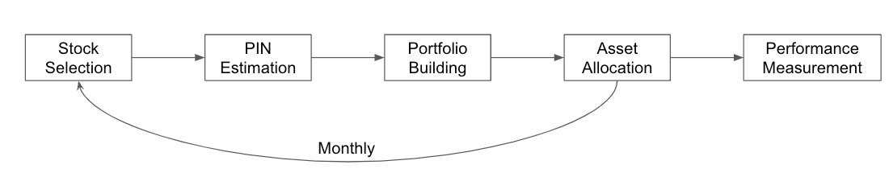

Getting Started
If you do not have poetry installed, execute:
pip install poetry or python -m pip install poetry
and than on the project root, to install the necessary dependencies, run:
poetry install.
Workflow

Imports and PIN estimation
You may use tutorial.ipynb to start understanding the workflow.
Its first cell will have the modules importation for the first part of the workflow, which is the PIN Estimation.
import pandas as pd
from fico.modules import dataset
from fico.modules import pin_estimation
In sequence it will load quotes from the database and store them in 'quotes' quotes = dataset.load_cedro_quotes().
And now you will be able to estimate PINs by running pins = pin_estimation.estimate_all_pins(quotes, window=60, verbose=True).
The entire process use to last 3 hours long, so if you rather have a small sample of the stocks, just set filter = True and select the stocks you wish to estimate.
filter = False
if filter:
stocks = {'PETR4', 'VALE3', 'MGLU3'}
quotes = quotes[quotes['symbol'].isin(stocks)].copy()
estimate_all_pins = False and let the code fetch the pre-estimated PINs.
estimate_all_pins = False
if estimate_all_pins:
pins = pin_estimation.estimate_all_pins(quotes, window=60, verbose=True)
else:
pins = dataset.load_results()['pin_results']
pins.sample(5)
Stock Selection and Portfolio Build
For this second part, you shall import the necessary modules and load essential data.
from fico.modules import stock_selection
from fico.modules import portfolio_build
eco_data = dataset.load_economatica_quotes()
eligible_stocks = stock_selection.filter(eco_data['volumes'])
portfolios = portfolio_build.build_portfolio(
pins,
eligible_stocks,
)
portfolios
portfolio_build.build_portfolio will return a dictionary containing a timestamp as key (time of the portfolio creation, which will be valid in the next day) and another dictionary as values --
which contains a stock as key and the weight on the portfolio as value.
It will be used to calculate returns.
from fico.modules import returns
r = returns.calculate_all_portfolios_returns(portfolios['weights'], eco_data['closing_prices'])
Since the target portfolio is long & short according to the article, so calculate_all_portfolios_returns returns a dataframe with: long (leveraged), short, longonly, and long_short portfolios returns.